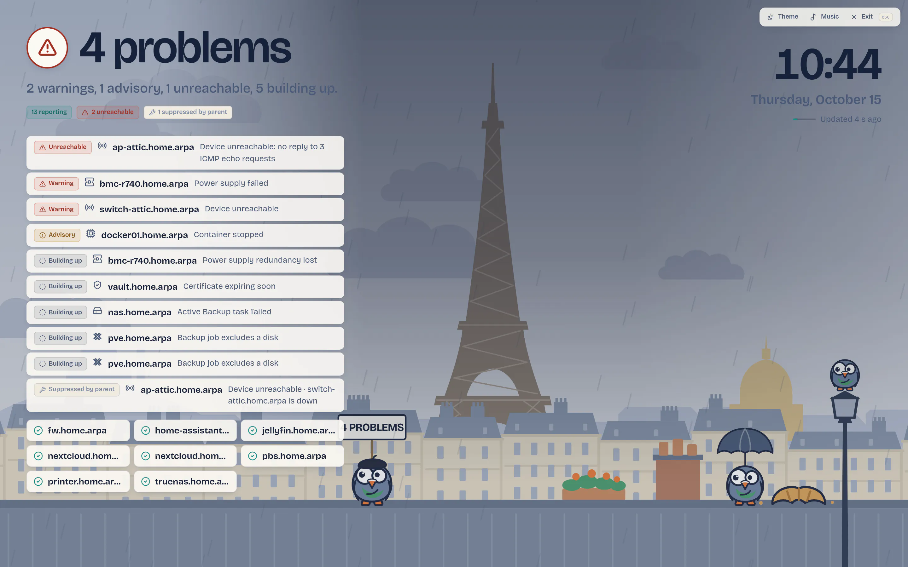

Is everything fine? Know in one second.
Dumb-simple, self-hosted monitoring from the homelab to the small business. One container, one IP address to type in, useful graphs and alerts in under a minute.
$ mkdir dumbmonit && cd dumbmonit
$ curl -fsSLO https://raw.githubusercontent.com/laupernoe/dumbmonit/main/docker-compose.yml
$ docker compose up -dThen open http://localhost:8080 and create the first account. Image for amd64 (arm64 later): ghcr.io/laupernoe/dumbmonit.


This is an alpha (0.1.0-alpha.7 is the current release). DumbMonit runs every day on its author's own network, but the HTTP API is not frozen, the database schema still moves and there is no upgrade guarantee across schema changes yet. Several integrations have only met test instances, not years-old production hardware; they are marked below. Try it, and tell us what breaks.
One container, one minute
A single container with one volume and no extra capability. Open the page, create an account, add a device: graphs and alerts follow.
Alerts that stay quiet
Useful rules are on from the start. Dependencies, grouping and learned baselines turn thirty messages into one.
65 device types
Switches, firewalls, hypervisors, NAS, websites, databases and self-hosted apps, each read the way its vendor intends.
Status pages and a wall screen
Share a public status page with your users, or put the weather-report view on a screen in the room.
What can it watch?
Pick a family to see what is watched, the alert rules that come with it and what to prepare on the device.
Servers and hardware
Linux, Windows, macOS and FreeBSD machines through the agent, server hardware through its management controller, UPS units and Active Directory.
4 device types
Network equipment
Switches, routers, access points and VPNs: any SNMP device, MikroTik, UniFi, Tailscale and OpenVPN.
5 device types
Firewalls
OPNsense, pfSense, FortiGate and Sophos: gateways, tunnels, interfaces, high availability and licences.
4 device types
Hypervisors and clusters
Proxmox, vSphere, XCP-ng, Nutanix and Kubernetes: hosts, guests, storage and cluster health.
6 device types
NAS and backup
Synology, TrueNAS, Unraid, Proxmox Backup Server and Veeam: disks, pools, and the age of the last good backup.
5 device types
Websites, certificates and checks
Web pages and APIs, ports, DNS, ping, TLS certificates, time servers, domain expiry, heartbeats and website changes.
11 device types
Web servers and reverse proxies
Traefik, Caddy, Nginx, Apache and Nginx Proxy Manager: backends, certificates and error rates.
5 device types
Self-hosted applications
Nextcloud, Immich, Paperless-ngx, Jellyfin, Plex, Home Assistant, GitLab and Forgejo.
8 device types
DNS, mail and security
Pi-hole, AdGuard Home, CrowdSec, and the mail servers and gateways: SMTP, MDaemon, SecurityGateway and Proxmox Mail Gateway.
7 device types
Databases and observability
PostgreSQL, MySQL, MongoDB, Redis, RabbitMQ, MQTT, and the VictoriaMetrics, Loki and Graylog servers.
10 device types